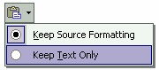

8 Pengeditan dasar
Kita telah membahas dua hal dasar yang merupakan syarat utama untuk pengeditan
teks, yaitu memilih lokasi kursor dan memilih teks.
Berikut ini beberapa pengeditan dasar yang harus Anda kuasai, seperti menghapus,
mengganti teks, menyalin teks dan tentu saja menggagal-kan perintah pengeditan.
8.1 Menghapus
Untuk menghapus teks, pilihlan teks lebih dulu, kemudian:
• Untuk menghapus teks, tekan Delete atau Backspace pada keyboard.
• Untuk menghapus teks sekaligus menggantinya dengan teks baru, ketikkan
teks yang baru pada teks yang terpilih tersebut.
8.2 Menyalin
Untuk memindahkan atau menyalin teks, mulailah dengan memilih teks, kemudian:
1. Untuk menyalin teks, aktifkan perintah Edit _ Copy atau klik tombol Copy
pada toolbar Standar atau tekan Ctrl+C.
2. Atau, untuk memindahkan teks, aktifkan perintah Edit _ Cut atau klik tombol
Cut pada toolbar standar atau tekan Ctrl+X.
3. Kemudian gerakkan kursor ke lokasi baru penempatan teks yang Anda inginkan.
4. Aktifkan perintah Edit _ Paste atau klik tombol Paste pada toolbar standar atau
tekan Ctrl+V. Salinan teks muncul pada lokasi baru tersebut.
8.3 Menyalin dengan mouse
Anda juga dapat menggunakan mouse untuk menyalin teks. Cara ini lebih
meyakinkan untuk teks dalam jumlah kecil dan jika kedua lokasi (lokasi asal dan
tujuan) terlihat di layar. Cara pemakaiannya adalah:
1. Pilih teks yang Anda inginkan. Lalu letakkan pointer pada teks yang terpilih
tersebut lalu klik, pointer berubah bentuk.
2. Untuk menyalin teks, tekan dan tahan Ctrl. Untuk memindahkan teks, jangan
menekan tombol apapun pada keyboard.
3. Kemudian drag pointer ke lokasi yang baru. Selama Anda melakukan drag,
sebuah garis titik-titik vertikal menandai lokasi baru teks.
4. Pada lokasi yang Anda inginkan, lepaskan penekanan tombol mouse. Teks
tersebut akan muncul pada lokasi baru tersebut.
8.4 Menggunakan Smart Tag
Seperti saudara lainnya di dalam Office XP, FrontPage XP juga memiliki Smart Tag.
Salah satu manfaatnya adalah pada waktu kita melakukan penempelan (Paste),
didekat lokasi paste akan muncul tag, yang apabila kita kllik akan menampilkan
pilihan menu, seperti berikut ini:

Gambar 4.15 Smart tag
Pilihan tersebut, maksudnya:
• Keep Source Formatting, menempel dengan menerapkan format asli teks.
• Keep Text Only, hanya menempelkan karakter teks.
Pilihan yang diberikan Smart Tag tidak hanya dua macam seperti di atas, namun bisa
berbeda, tergantung kondisinya.
Smart Tag tidak hanya muncul untuk proses peneempelan saja, namun juga untuk
proses lain.
Copyright © Herlan Lesmana
Created with the Freeware Edition of HelpNDoc: Easily create CHM Help documents